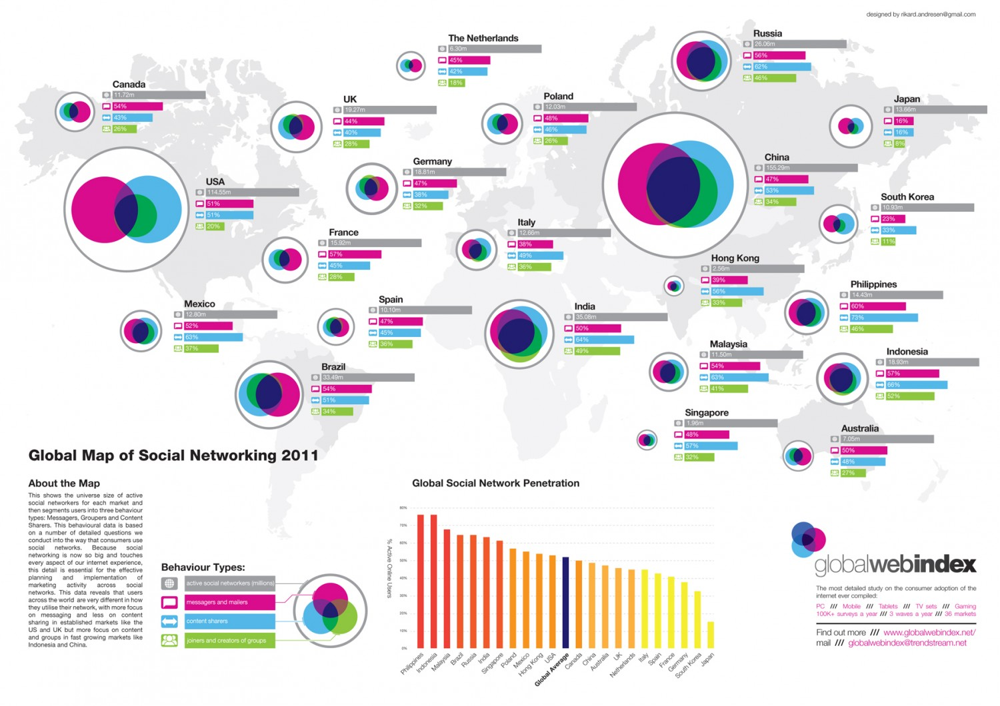
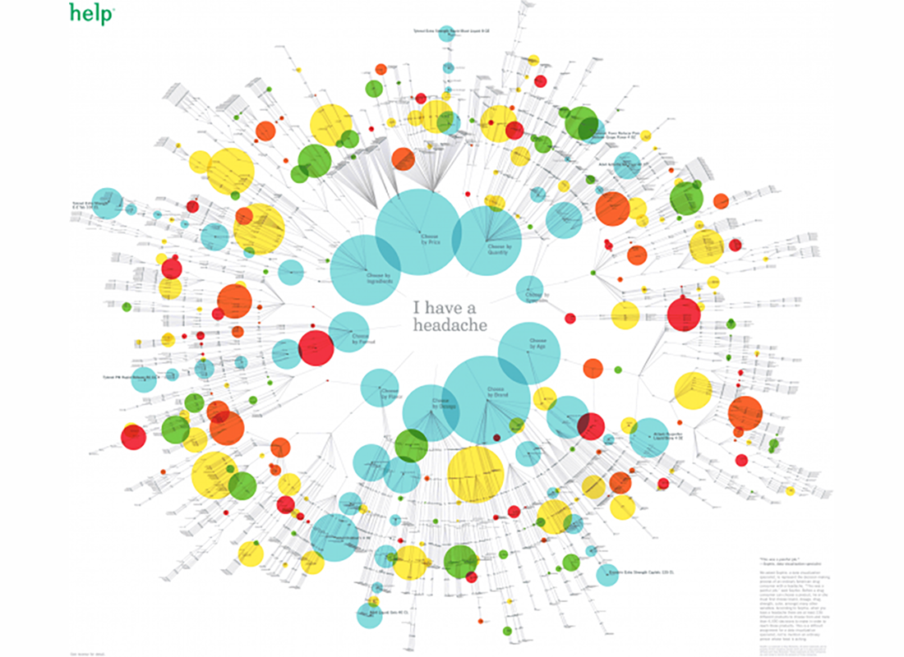

This is a great example of successful experimentation with combining multiple visualizations into one. The map is used well to show general location, but it fades into the background since it is not the most important information. The bar charts show great data about quantity, and the venn diagrams show how those quantities overlap each other. In addition, since there are so many venn diagrams, they can be compared to each other like small multiples. It’s wonderful when combinations go so well together!

Usually visualizations are supposed to help make data more clear, but The Insane Choices You Face At The Drug Store does just the opposite. The visualization is extremely busy, but this is on purpose. It does a great job of conveying the point; picking a headache reliever is a headache in itself. Sometimes visualization of complexity can be clarifying in itself!
Have you ever wondered how common your health symptoms are or if they’re related to other conditions? GE has. Its Health InfoScope allows you to look at data from millions of patients to get a deeper understanding of common health conditions. This is another interactive chart where you can drill down into the data according to your interests.
Usually we think of technology expanding exponentially, and of timelines being linear. These two concepts don’t seem to go together well, but Envisioning Technology manages to merge both into the same graphic. Time progresses as the radius of the background rings increase, but since these are circular, the available space for each technology branch grows quadratically. The future certainly holds a gloriously diverse set of technology, and this visualization does a good job of showing the predicted arrival times of some of them.
Everyone loves space: it’s exciting and mysterious, and floating around weightless looks like a lot of fun. Space Launches shows which countries have put the most effort into getting us there. This visualization combines a timeline with stacked bar charts. It does a great job of showing the focus during the Cold War, and the shift as political and diplomatic pressures change.
Treemaps are a visualization developed by Ben Shneiderman to identify how the current space on ones hard drive is being partitioned. Now they are a popular tool to visualize any hierarchical data that have quantitative size data associated with it. This one is visualizing the job market sector.
This interactive by DensityDesign does an impressive job of introducing the non-linguist (aka most of us) to the many world languages. All 2,678 of them.
This piece allows you to explore common languages families, see which languages are most spoken, and view where languages are spoken around the world. This is great visual storytelling: taking an in-depth subject and breaking it down in an easy-to-understand way.
The best data visualizations communicate information and do so in an intuitive and beautiful way. Echelon Insights nailed it with this piece, which visualizes the most talked-about news stories of 2014 on Twitter. What do 184.5 million tweets look like? Rad spin art.
If you look at the numbers, which canine comes out as top data-dog? Which are the best dog breeds according to the data? A visualisation from Knowledge is Beautiful (research by Miriam Quick, dog artwork by Andrew Park and concept & design by David McCandless).
The data on intelligence, longevity, genetic ailments and other markers create a “data-score” which was then plotted against public popularity of various breeds, according to the American Kennel Club.